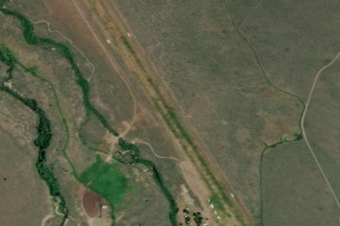

SMILEY CREEK
U87 · ID

Aerial imagery source: Esri, Vantor, Earthstar Geographics, and the GIS User Community
| Identifier | U87 |
|---|---|
| State | ID |
| Runway length | 4,900 ft |
| Runway width | 150 ft |
| Surface | TURF |
| Runway | 14/32 |
| Elevation | 7,206 ft |
| Ownership | public |
| CTAF | 122.9 |
| Coordinates | 43.91213888, -114.79605555 |
Notes
[idaho_itd] State Airfield [ubcp] Smiley Creek Procedures Smiley Creek SOP Video (from Idaho DOT) Smiley Creek Weather Smiley Creek Webcam SE Smiley Creek Webcam E Smiley Creek Webcam N | [shortfield] Location Overview Smiley Creek Airstrip sits 40 miles northwest of Ketchum/Sun Valley and 20 miles south of Stanley along Scenic Byway 75, nestled in the Sawtooth National Recreation Area and surrounded by the Sawtooth and White Cloud Mountain ranges. The airstrip occupies 40 acres and is bordered by the main Salmon River. Smiley Creek Lodge sits directly across the street from the airstrip, making it as convenient as backcountry destinations get. Camping & Recreation The airstrip offers a full hook-up RV pad on site. The lodge across the road provides cabins and meals, and the area is known for excellent fishing along the Salmon River. Smiley Creek is a traditional gateway to the Idaho backcountry, with several nearby landing strips offering varying experience levels for day-trip flying. A short flight west puts you in the Sawtooth Mountains, and pilots have been known to hop over to Atlanta, Idaho for breakfast runs. Notes & Warnings The 4,900 × 150-foot turf runway (14/32) sits at approximately 7,200 feet MSL — density altitude is a serious consideration, especially in summer. No winter maintenance is performed, and landing Runway 14 with takeoff on Runway 32 is recommended when wind conditions allow. The runway was found in good condition during its 2025 FAA inspection, with well-maintained turf and no significant undulations. Two windsocks and segmented circles are in place and visible from the air. History Smiley Creek has long served as a beloved gathering point for backcountry aviators across the Mountain West. Over the decades it evolved from a remote high-country strip into an organized caretaker-managed facility under the Idaho Transportation Department's Division of Aeronautics. Its fly-in culture attracted generations of pilots flying everything from Cessna 170s and 180s to experimental homebuilts. In 2022, the airstrip received a community-driven improvement when 16-year-old Eagle Scout Carter Hickey of Hailey — working to honor the memory of well-known backcountry pilot Galen Hanselman, who had frequented the strip before passing away from cancer — built a picnic pad and campfire pit for pilots camping at the facility. The project was completed just ahead of the first winter snowfall, carrying on the spirit of stewardship that defines this special place.